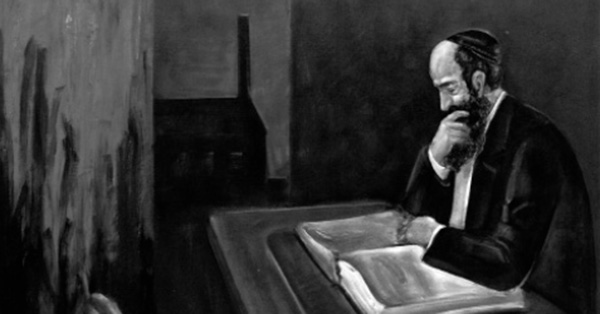

Chassidus Makes the Man
A compilation of Chassidishe stories on the topic of the topic of learning Torah and Chassidus, as written down by R’ Chaim Ashkenazi a”h.

ONE MORE CONTRACTION
A teacher of nine ten-year-olds had yechidus with the Rebbe. The Rebbe told him he should explain yichuda ilaa and yichuda tataa to the children.
The teacher expressed his surprise: How could he explain such lofty ideas to young children?!
The Rebbe said: If Hashem constricted Himself so that we can understand, then He can constrict Himself a little bit more so that even these young children can understand.
A NEW MAN
A Chassid traveled with his wife to the airport in New York in order to fly to a different state, but he couldn’t make the flight and had to return home. He was concerned about what it says in the will of Rabbi Yehuda HaChassid that someone who sets out on a journey should not return home before reaching his destination.
He called R’ Chadakov and asked him to ask the Rebbe what he should do. The answer was he should learn a chapter of Tanya, and this learning would cause an essential transformation in him so that he would be like an entirely different person and could go home.
THE FOOL IN TANYA
In Yeshivas Chachmei Lublin in Poland, there was a brilliant bachur with an unusually powerful memory. He was considered a walking encyclopedia. He was given a room in which he sat and learned, and whoever needed a source would ask him and he would easily find it.
They once asked him if he ever learned Tanya. He said he did. They asked him how many times it says the word “shoteh” (fool) in Tanya. He said the word “shoteh” appears one time explicitly, “And do not be a shoteh,” but in every line of Tanya the implicit message is – do not be a fool.
TANYA – ALL NIGHT
R’ Shaul Ber Zislin was once a guest of R’ Zalman Butman. There was no place for him to sleep and so they both sat and learned Tanya all night. R’ Shaul Ber spent the entire time explaining the word Tanya!
The next day, R’ Zalman related this to his brother-in-law, Zalman Schneersohn who asked him in jest: He did not get to talk about the border around the word Tanya yet? (Because in the Tanyas of that period the word Tanya is in a box.)
AN IMMINENT STRIKE
A family member went to the Rebbe Rayatz and noticed that he seemed upset. He asked the Rebbe what happened. The Rebbe said he had received a letter from Toras Emes which said that the teachers were planning on staging a work strike and this is why he was downcast.
AS THOUGH HE TAUGHT HER …
The Rebbe Rayatz related that the holy Ohr HaChayim (Rabbi Chaim Ibn Attar, 1696-1743) had two daughters. Thanks to his learning with them, we have the commentary Ohr HaChayim on the Torah. From this, the Rebbe learned of the obligation to teach Torah to Jewish girls.
When the Rebbe Rayatz visited Eretz Yisroel, one of the “notables” of Yerushalayim questioned him about this, for it says in the Gemara, “whoever teaches his daughter Torah it’s as though he taught her tiflus (moral corruption). How could the Rebbe demand that Jewish girls be taught Torah?
The Rebbe said: How is it possible that you are worried about the teaching of girls being “as though he taught her tiflus,” and you are not worried about the fact that today they are teaching girls outright tiflus?
At a later point, someone from Yerushalayim wrote to the Rebbe and asked: But the Ohr HaChayim did not have children at all?
The Rebbe Rayatz responded that he heard that too, but he had been told by his father the Rebbe Rashab, who heard from his father the Rebbe Maharash, that the Ohr HaChayim had daughters.
In fact, I [C. A.] heard that there is someone who has a family tree that goes back to the Ohr HaChayim.
WHEN YOU’RE INVOLVED YOU DON’T FORGET
R’ Chaim of Brisk once asked the Rebbe Rashab what the purpose in learning Chassidus is. The Rebbe said it is in order not to forget the Nosein HaTorah (the One who gives the Torah, i.e. Hashem).
R’ Chaim Brisker asked: By learning Chassidus is it really impossible to forget the Nosein HaTorah?
The Rebbe said: There is a proof from the Gemara in connection to b’dikas chametz for Pesach. We are not concerned lest a person eat from the chametz while checking for chametz, because he is involved with chametz for the purpose of destroying it. The same is true for learning Chassidus. While constantly speaking about Hashem, how is it possible to forget about Him?
THAT’S A LAMDAN!
R’ Peretz Chein was in Lubavitch and wanted to see the Tzemach Tzedek. At the same time, a young prodigy who was not a Chassid, whom they did not know, also wanted yechidus with the Rebbe.
Of course, R’ Peretz was a big Chassid and lamdan and they did not want allow the bachur in before him. But the bachur said he should be allowed in immediately and an argument ensued about who should go in first, R’ Peretz or the bachur.
When the Tzemach Tzedek heard the commotion he said, “Let them both in.”
The Tzemach Tzedek asked the bachur, “Do you know how to learn?” The bachur said he did.
The Rebbe asked him, “Did you learn the Rambam in such-and-such a section?” He said he did.
The Rebbe asked him a question on that Rambam and the bachur was very impressed and said: Oy, a shaila.
The Tzemach Tzedek gave him an answer to the question and the bachur was even more impressed and said: Oy, a tirutz.
Once again, the Tzemach Tzedek asked him a question and then answered it and this happened five times.
The bachur was tremendously impressed by the Rebbe’s questions and answers, and on his way out he said: That’s a lamdan!
R’ Peretz, who was a big scholar himself, commented about this exchange: Out of the entire learned conversation between the Rebbe and the bachur, he understood the first question and answer. He also understood the second question but only understood a little bit of the answer. After that, he did not understand anything at all.
STILL NOT A LAMDAN
One of the Chassidim of the Alter Rebbe had a son who was a big lamdan but he was also quite arrogant. When this Chassid asked the Alter Rebbe for advice on dealing with his son’s arrogance, the Rebbe told him to bring his son.
When the son saw the Rebbe, the Rebbe asked him, “Do you know how to learn?”
“Of course,” he replied.
The Rebbe asked him a question about an explanation given by the Rosh (a commentary) and the bachur did not know the answer. The Rebbe asked him, “So how will we reconcile with what the Rosh says?”
The bachur said, “So let it not be according to what the Rosh says …”
The Alter Rebbe asked, “But if I can explain the Rosh to you?”
“I will listen,” said the son.
The Rebbe explained the Rosh and asked, “So, is the Rosh correct?”
“Certainly,” said the son.
The Rebbe immediately asked another question on his answer and again resolved the difficulty. He presented questions and answers a number of times and each time there was a question, the son said, “Not like the Rosh,” and when the Rebbe resolved the question he agreed, “Like the Rosh.”
Finally, the Rebbe said to him, “Nu, decide, is it like the Rosh or not?” And the Rebbe concluded by saying, “You can’t be called a lamdan yet.”
WHAT DOES IT SAY IN THE PIDYON NEFESH?
The mashpia R’ Shmuel Groner Esterman went to the Rebbe Maharash for Rosh HaShana and gave his pidyon nefesh to R’ Hendel for him to give it to the Rebbe.
When R’ Hendel left the Rebbe’s room he told R’ Shmuel Gronem, “Bring mashke. The Rebbe enjoyed your pidyon nefesh. What did you write in it that made the Rebbe so happy?”
R’ Gronem said: Most of it had to do with material matters and a request for shalom bayis. At the end I wrote: “I am disgusted with my life except for the bit of Chassidus that I learn in depth.”
Beis Moshiach (staff). "Chassidus Makes the Man." Beis Moshiach, no. 874 (March 21, 2013).